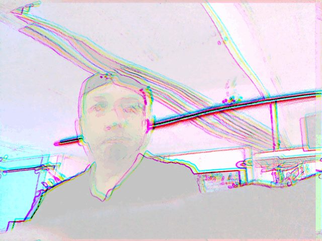
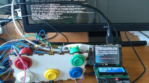
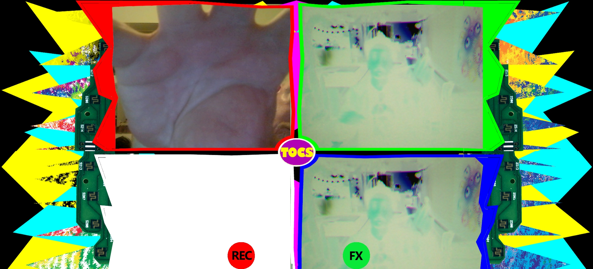
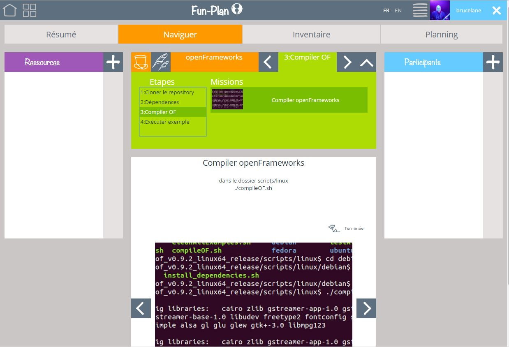
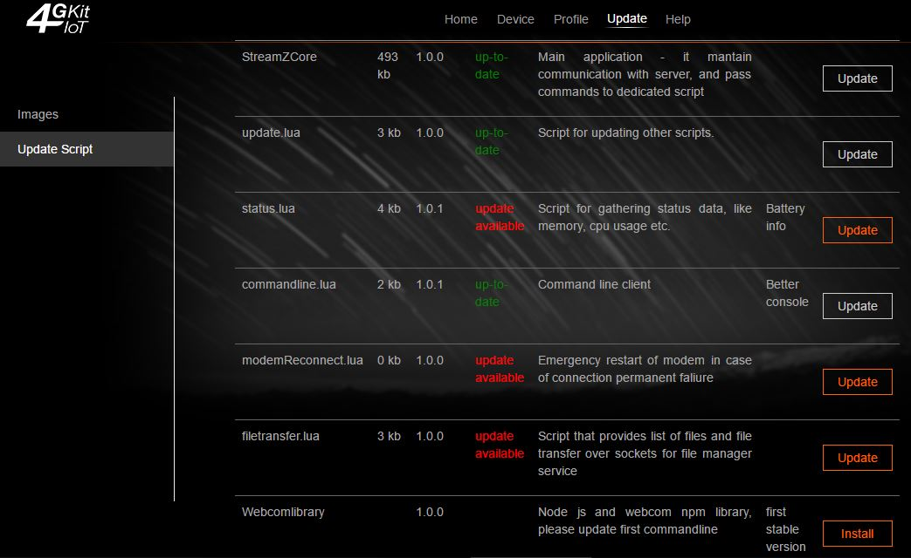
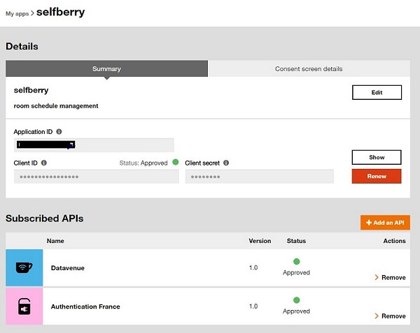

Selfberry
Trophée Objets Connectés et Services
Bruce LANE - Sébastien MASSIAUX
Générateur de selfies
Cas d'usage: une personne se présente devant une borne à selfie, appuie sur des boutons pour choisir un effet visuel. 
La caméra enregistre une dizaine d'images et les compile dans un GIF animé, pouvant être téléchargé sur un site Internet prévu à cet effet.

Partage sur les réseaux sociaux possible.
Installation matérielle
- boîte avec boutons arcade
- camera standard raspberry pi
- afficheur sur Arduino
- module TFT 2.8
Installation logicielle
- système d'exploitation Raspbian
- openFrameworks (C++)
- effets (shaders openGL)
Test du SelfBerry
Experience Vj
La Zonmé - Nice
Evénement du 21 au 23 avril
(lien Facebook)
Construisez-la vous même au SoFab!
- plans disponibles
- code source sur github
- article sur http://www.sofab.tv/2016/04/projet-selfberry/
Installation kit 4G for IoT
- console administration
- mises à jour
- webcom basé sur nodejs
Compte Datavenue

- clés
- applications
SDK Datavenue

Exemple nodejs
Merci pour l'attention!